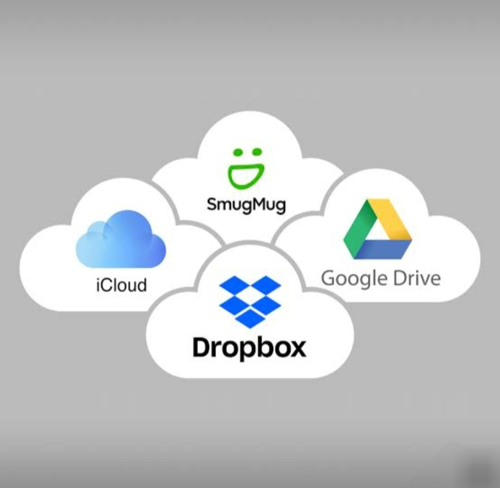

الزهراء علاء يوسف ابراهيم
2500492
BIS
التخزين السحابي بقي من الحجات المهمه في حياتنا لانه بيساعدنا نحفظ ملفاتنا علي الانترنت ونوصل ليها في اي وقت و فيه برامج بتقدم الخدمه دي زي google Drive ,one Drive بتساعدنا اننا نخزن ملفاتنا ونبعتها لناس تانيه .
وفي البحث ده هنقدر نتكلم عن التخزين السحابي ونعرف اي هو وهنعرف مميزاته وعيوبه والزاي نحافظ علي الملفات من الضياع او السرقة
الموضوع ده مهم لانه بيساعدنا نعرف نحفظ ملفاتنا و نرجع ليها بسهولة وكمان نشاركها مع اصحابنا ونقدر نحافظ عليها من الضياع
التخزين ليه فوائد كثيرة من اهمها:
في الدراسة بنحفظ المحاضرات والابحاث ونبعتها لصحابنا وفي الشركات بيساعدهم يحتفظوا بالملفات بتاعتهم بدل ما تضيع وفي حياتنا الشخصية اننا نحفظ الصور والملفات ونرجع ليهم بعدين

| حفظ الصور | حفظ الملفات | الفائدة |
|---|---|---|
| توفير مساحه | المذاكرة | google drive |
| بنبعت الملف لصحابنا | في المشاريع | بنوصل لملفاتنا في اي وقت |
| ممكن حد يخترق الحساب لو كلمة السر ضعيفه | سريع في مشاركة الملفات الكبيرة | one drive |
في النهاية ان التخزين السحابي ده فكرة حلوه ومفيدة عشان بيحافظ علي شغلنا وملفاتنا وبنعرف نفتحها علي اي موبايل في اي وقت ومش بنخاف انها تتمسح